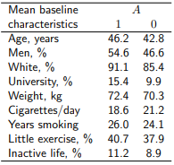
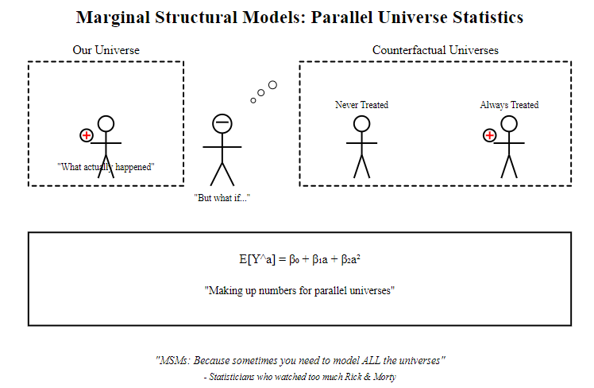

IP-weighting and Marginal Structural Models (MSMs)
October 29, 2024
Introduction
Motivating Example
We are interested in the question “What is the average causal effect of smoking cessation on body weight gain?”
- Using data from NHEFS study from 1971-1982 with a baseline visit and a follow-up visit
- Subjects are considered treated \(A = 1\) if they quit smoking before the follow-up
- Only individuals with known age, sex, race, weight, height, education, alcohol use and intensity of smoking at baseline and followup are considered.
Example Data
Individuals are classified as treated \(A=1\) based on two conditions:
- If they reported being smokers at baseline, and
- If they have reported to quit smoking in 1982.
Selection Bias
Bias may be induced by condition (b) due to potential selection into/out of the study.
Inverse Probability Weighting
Inverse Probability Weighting: Overview
- A method of creating a pseudo-population that uses weights to account for confounding.
- Each individual is weighted by the inverse of the probability of receiving the treatment they actually received.
\[ \operatorname{Weight} = \frac{1}{\widehat{\text{Pr}}(A \mid L)} \]
IPW: Computation
- Goal: Estimate causal effect of treatment
- Use the pseudo-population to estimate the difference by \[ \widehat{E}_{\text{ps}}[Y|A=1] - \widehat{E}_{\text{ps}}[Y|A=0] \]
- Estimate pseudo population difference with weighted least squares \[
E[Y|A] = \theta_0 + \theta_1A
\]
- Weight each individual by their estimated IP weights
- The parameter estimate \(\hat{\theta}_1\) is the estimated treatment effect
IPW: Assumptions
- No unmeasured confounding: All confounders must be measured.
- Correct specification of the propensity score model: The model for treatment assignment must be correct.
- Positivity: There must be non-zero probability of receiving each treatment for all levels of confounders.
- Consistency: Observed outcomes must correspond to the treatment actually received.
- Stable Unit Treatment Value Assumption (SUTVA): There is no interference between individuals (i.e., one person’s treatment does not affect another’s outcome).
IPW: Rationale

Python causality handbook - Facure
- In observational studies, treatment assignment isn’t random
- Give more weight to “surprising” observations and less weight to “expected” observations
- Build a pseudo-population where the treatment looks more randomized
Horvitz-Thompson estimators
The Horvitz-Thompson (HT) estimator is a method used to estimate population parameters from stratified simple random sampling. \[ \hat{E}\left[\frac{I(A=a)Y}{f(A|L)}\right] \]
When estimating \(E[Y^a]\) via IP weighting with least squares for a binary \(A\), the modified HT estimator, known as the Hajek estimator, is used: \[ \frac{\hat{E}\left[\frac{I(A=a)Y}{f(A|L)}\right]}{\hat{E}\left[\frac{I(A=a)}{f(A|L)}\right]} \] Under positivity the Hajek estimator is an (asymptotically) unbiased estimator of \(E\left[\frac{I(A=a)Y}{f(A|L)}\right]\), since \(E\left[\frac{I(A=a)}{f(A|L)}\right] = 1\) asymptotically.
IPW: Pros and Cons
- Advantages:
- More robust to model misspecification of the outcome model.
- Avoids directly modeling the outcome.
- Disadvantages:
- Requires correct specification of the propensity score model.
- Extreme weights can lead to instability and inefficiency.
- The size of the pseudo-population is twice the size of the study population
IPW: Stabilized weights
Stabilized weights: \[\operatorname{SW}_i = \frac{\text{Pr}(A_i)}{\text{Pr}(A_i|L_i)} = \frac{f(A)}{f(A|L)}\]
Key Properties
- Numerator: Marginal probability of treatment
- Denominator: Conditional probability of treatment
- Expected value of stabilized weights approximately 1 (Pseudo-population size equal to sample population)
IPW: Stabilized weights time-varying
The Stabilized weights can be extended to time-varying confounders
\[ \operatorname{SW} = \frac{P(A|V)}{P(A|L,V)} \]
\(V\) = baseline covariates
\(L\) = time-varying confounders
IWP: Example
- Estimate Propensity Score: Using logistic regression
- Calculate Weights: Non-stabilized weights
Code
Min. 1st Qu. Median Mean 3rd Qu. Max.
1.054 1.230 1.373 1.996 1.990 16.700 - Weighted Least Squares Model:
IWP: Example (Stabilized weights)
- Estimate Propensity Score: Using logistic regression
Code
denom.fit <-
glm(
qsmk ~ as.factor(sex) + as.factor(race) + age + I(age ^ 2) +
as.factor(education) + smokeintensity +
I(smokeintensity ^ 2) + smokeyrs + I(smokeyrs ^ 2) +
as.factor(exercise) + as.factor(active) + wt71 + I(wt71 ^ 2),
family = binomial(),
data = nhefs.nmv
)
pd.qsmk <- predict(denom.fit, type = "response")- Calculate Weights: Stabilized weights
Code
Min. 1st Qu. Median Mean 3rd Qu. Max.
0.3312 0.8665 0.9503 0.9988 1.0793 4.2977 - Weighted Least Squares Model:
IWP: Example Discussion
With both stabilized and non-stabilized weights the estimated treatment effect is found to be \(\hat{\theta}_1 = 3.4\).
- Why should we bother using the stabilized model if the results are the same?
- Typically the stabilized weights results in a narrower 95% CI
- The benefits can only really be realized when the model is not saturated
- Noticed in many settings such as continuous treatments or time-varying treatments
Marginal Structural Models (MSMs)
How about an XKCD comic?
AI Generated xkcd comic
MSMs: Overview
- Developed to handle continuous treatments.
- Combine IPW and structural models to estimate causal effects.
- MSMs model the effect of treatment on outcome, weighted by IPW to adjust for confounders.
Consider the following linear model \[ E[Y^a] = \beta_0 + \beta_1a \]
Models for the marginal mean of a counterfactual outcome are referred to as marginal structural mean models
MSMs: For Dichotomous treatments
- Recall the example from IP-weighting, there are only two treatments
- In this case, the MSM \(E[Y^a] = \beta_0 + \beta_1a\) is saturated
- The model has 2 unknowns on both sides,
- \(E[Y^{A=1}]\) and \(E[Y^{A=0}]\) on the left and \(\beta_0\) and \(\beta_1\) on the right
- Therefore, using the pseudo-population sample averages estimate the causal effect
MSMs: For continuous treatment
- Suppose now we consider the treatment Change in smoking intensity
- Now the treatment \(A\) can take on values (-80, 50)
- Now we are interested in estimating \(E[Y^a] - E[Y^{a^{\prime}}]\) for any values of \(a\) and \(a^{\prime}\)
- A saturated model no longer makes sense with so many values of \(A\)
- Using a non-saturated model to specify the dose response curve for the treatment effect
- Potential to model with non-linear models, \[ E[Y^a] = \beta_0 + \beta_1 a + \beta_2 a^2 \]
MSMs: continuous treatment effect
- Suppose we are interested in estimating the causal effect of increasing smoking intensity by 20 cigarettes per day compared to no change \[ E[Y^{a = 20}] - E[Y^{a = 0}] \]
- Using the parabolic model \[\begin{align*} E[Y^{a = 20}] &= \beta_0 + 20 \beta_1 + 400 \beta_2 \\ E[Y^{a = 0}] &= \beta_0 \end{align*}\]
- How can we estimate \(\beta_1\) and \(\beta_2\)?
MSMs: Estimation
Estimate using IP weighting!
- Estimate IP weights \(\operatorname{SW}^A\) to create pseudo-population with no confounding from \(L\)
- Fit the associational model \(E[Y|A] = \theta_0 + \theta_1 A + \theta_2 A^2\)
- Use the pseudo-population estimates \(\theta_1\) and \(\theta_2\) as estimates of \(\beta_1\) and \(\beta_2\)
IP estimation in continuous treatments
To estimate the stabilized weights \(\operatorname{SW}^A\), we need to estimate \(f(A|L)\). For continuous treatments \(A\), \(f(A|L)\) is a probability density function.
Continuous IP weights estimation
- Generalized Propensity Score (GPS)
- Kernel Density Estimators (KDE-IPW)
- Machine Learning-Based GPS (ML-GPS)
- Bayesian Methods for GPS
Generalized Propensity Scores (GPS)
- GPS is the conditional probability of receiving a particular level of treatment/exposure given observed baseline covariates
- GPS is a balancing score: conditional on the propensity function
- In our example we have values from -80 to 50 for change in smoking intensity
- Model with normal logistic regression or GAM
- Depending on the possible values of treatment we may use a different model
KDE-IPW
- Non-parametric IPW method
- KDE is used to approximate the probability density of receiving a specific treatment value, conditional on confounders
- Stabilized weights are then calculated using the marginal density of the treated and conditional density estimate
- Sensitive to choice of bandwidth and may struggle with high-dimensional confounders
ML-GPS
- Non-parametric method of GPS
- Leverage machine learning methods to model the treatment assignment
- Gradient Boosting
- Random Forest
- Neural Network
- Stabilized weights are calculated by dividing the marginal treatment density by the ML-predicted density conditional on confounders
- ML methods may require large sample sizes to avoid over fitting
Bayesian Methods for GPS
- Using Bayesian methods, prior information is incorporated over parameters in the GPS model
- Hierarchical models can be used to account for varying levels of confounding over treatment levels
- Can be computationally expensive
MSMs: Example
- Fit GPS model (Linear regression)
Code
nhefs.nmv.s <- subset(nhefs.nmv, smokeintensity <= 25)
# estimation of denominator of ip weights
den.fit.obj <- lm(
smkintensity82_71 ~ as.factor(sex) +
as.factor(race) + age + I(age ^ 2) +
as.factor(education) + smokeintensity + I(smokeintensity ^ 2) +
smokeyrs + I(smokeyrs ^ 2) + as.factor(exercise) + as.factor(active) + wt71 +
I(wt71 ^ 2),
data = nhefs.nmv.s
)
p.den <- predict(den.fit.obj, type = "response")
dens.den <-
dnorm(nhefs.nmv.s$smkintensity82_71,
p.den,
summary(den.fit.obj)$sigma)
# estimation of numerator of ip weights
num.fit.obj <- lm(smkintensity82_71 ~ 1, data = nhefs.nmv.s)
p.num <- predict(num.fit.obj, type = "response")
dens.num <-
dnorm(nhefs.nmv.s$smkintensity82_71,
p.num,
summary(num.fit.obj)$sigma)
nhefs.nmv.s$sw.a <- dens.num / dens.den
par(mfrow = c(1,2))
plot(den.fit.obj, which = 2, main = "Denominator Q-Q")
plot(num.fit.obj, which = 2, main = "Numerator Q-Q")Stabilized weight residuals
MSMs: Example
- Fit Model on \(\operatorname{SW}^A\)
Code
par(mfrow = c(1,1))
# model built on pseudo-population
msm.sw.cont <-
geeglm(
wt82_71 ~ smkintensity82_71 + I(smkintensity82_71 * smkintensity82_71),
data = nhefs.nmv.s,
weights = sw.a,
id = seqn,
corstr = "independence"
)
beta <- coef(msm.sw.cont)
SE <- coef(summary(msm.sw.cont))[, 2]
lcl <- beta - qnorm(0.975) * SE
ucl <- beta + qnorm(0.975) * SE
nam <- names(beta)
cbind(beta, lcl, ucl) |>
as_tibble() |>
mutate(coefficients = nam) |>
relocate(coefficients) |>
gt::gt() |>
gt::fmt_number(decimal = 3)| coefficients | beta | lcl | ucl |
|---|---|---|---|
| (Intercept) | 2.005 | 1.426 | 2.583 |
| smkintensity82_71 | −0.109 | −0.171 | −0.047 |
| I(smkintensity82_71 * smkintensity82_71) | 0.003 | −0.002 | 0.007 |
- Estimate causal effect
\[ E[Y^{a = 20}] - E[Y^{a = 0}] = 0.9 - 2.0 = -1.1 \]
Time-Varying Confounders and MSMs
Time-Varying Confounders in Longitudinal Studies
- Definition: A time-varying confounder is a variable that:
- Changes over time.
- Affects both the treatment assignment and the outcome.
- Can itself be influenced by prior treatment.
These confounders complicate causal estimation in longitudinal settings.
Why Time-Varying Confounders are Challenging
- Bias in Standard Models
- Feedback Loops
- When confounders are affected by prior treatment, a feedback loop can form
- Goal: Estimate causal effects in a way that addresses this confounding over time.
Marginal Structural Models (MSMs) with IP weighting help handle time-varying confounding.
MSMs for Time-Varying Confounding
- MSMs combined with IP weighting are used to adjust for time-varying confounders.
- Construct weights at each time point
- The time-varying confounders in the resulting pseudo-population no longer bias treatment
- In the pseudo-population, treatment is effectively randomized with respect to time-varying confounders.
This approach allows for causal inference in studies with dynamic confounding over time.
Wrap-up
- IP-weighting: Uses weights to adjust for confounders by creating a pseudo-population.
- Stabilized weights: correct for study population size.
- MSMs: Combines IP-weighting and models for counterfactual outcomes.
- Choosing the right method depends on the context.
- Type of treatment (Continuous, Dichotomous, multi-level)
- Size of sample
- Inclusion of prior information
- Both can be extended to time-varying covariates
References
- Robins, J.M. (1986). “A new approach to causal inference in mortality studies.”
- Hernán, M.A., & Robins, J.M. (2020). “Causal Inference: What If.”
- Lee, Brian K., Justin Lessler, and Elizabeth A. Stuart. (2010). “Improving Propensity Score Weighting Using Machine Learning.”
- Feng, Ping, Xiao-Hua Zhou, Qing-Ming Zou, Ming-Yu Fan, and Xiao-Song Li. (2012). “Generalized Propensity Score for Estimating the Average Treatment Effect of Multiple Treatments.”
- Forastiere, Laura, Fabrizia Mealli, Albert Wu, and Edoardo M. Airoldi. (2022). “Estimating Causal Effects under Network Interference with Bayesian Generalized Propensity Scores.”
- Slide help from chatGPT

Nathen Byford